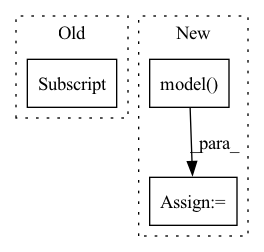

Pattern ID :28756
Before Change
return input_map
def infer(self, input_map):
results = self.model(paddle.to_tensor(input_map["input_ids"] ))
return results
def postprocess(self, infer_data):After Change
def infer(self, inputs):
with paddle.amp.auto_cast(False, level="O2", dtype=self.model.config.dtype):
result = self.model(
**inputs,
)
result = result[0]
return result
def postprocess(self, infer_data):In pattern: SUPERPATTERN
Frequency: 6
Non-data size: 3
Instances Fragment ID: 84657274
Project Name: paddlepaddle/paddlenlp
Commit Name: cd9b90e2339a664617b607015d8735e0d430dce2
Time: 2023-03-29
Author: 1435130236@qq.com
File Name: examples/language_model/bloom/predict_generation.py
M Class Name: Predictor
N Class Name: Predictor
M Method Name: infer(2)
N Method Name: infer(2)
M Parent Class: object
N Parent Class: object
M File Name: examples/language_model/bloom/predict_generation.py
N File Name: examples/language_model/bloom/predict_generation.py
M Start Line: 105
M End Line: 106
N Start Line: 69
N End Line: 74
Before Change
y = x.new_empty(r + horizon)
y[:r] = x[-r:] // Copy last `see` observations
for h in range(r):
_, queues = self.model.forward_fast(y[h] .view(1, 1, 1), queues)
for h in range(horizon):
p, queues = self.model.forward_fast(y[r + h - 1].view(1, 1, 1), queues)After Change
// print([q.shape for q in queues])
y[:r] = x[-r:] // Copy last `see` observations
_, outputs = self.model( y[:r].view(1, 1, -1), return_outputs=True)
queues = wave.create_fast_queues(self.model.wave.features, outputs)
print(queues[2][0, :10, -1])
// queues = wave.create_fast_queues( Fragment ID: 84657273
Project Name: cheind/autoregressive
Commit Name: 895fe952e9a4de2bbdbf27e3b05cf99fad426c07
Time: 2021-10-20
Author: cheind@profactor.at
File Name: autoregressive/models.py
M Class Name: FastGeneration
N Class Name: FastGeneration
M Method Name: predict(4)
N Method Name: predict(4)
M Parent Class:
N Parent Class:
M File Name: autoregressive/models.py
N File Name: autoregressive/models.py
M Start Line: 200
M End Line: 209
N Start Line: 197
N End Line: 219
Before Change
prediction_output = []
for i in range(len(inputs)):
model = FlaxBertForQuestionAnswering.from_pretrained("mrm8488/bert-multi-cased-finedtuned-xquad-tydiqa-goldp")
inputs = self.tokenizer(question[i] , context[i], return_tensors="jax",padding=True)
outputs = model(**inputs)
answer_start_index = outputs.start_logits.argmax()After Change
prediction_output = []
for inp in inputs:
tokenized = self.tokenizer(inp["question"], inp["context"], return_tensors="jax", padding=True)
output = self.model(**tokenized)
answer_start_index = output.start_logits.argmax()
answer_end_index = output.end_logits.argmax()
predict_answer_tokens = inputs.input_ids[0, answer_start_index : answer_end_index + 1]
prediction_output.append({ Fragment ID: 84657272
Project Name: pair-code/lit
Commit Name: 91a22d65b7165cea1ad68dfffce0769ec9a2c966
Time: 2022-06-16
Author: 31214277+aryan1107@users.noreply.github.com
File Name: lit_nlp/examples/models/tydi.py
M Class Name: TydiModel
N Class Name: TydiModel
M Method Name: predict_minibatch(2)
N Method Name: predict_minibatch(2)
M Parent Class: lit_model.Model
N Parent Class: lit_model.Model
M File Name: lit_nlp/examples/models/tydi.py
N File Name: lit_nlp/examples/models/tydi.py
M Start Line: 134
M End Line: 156
N Start Line: 130
N End Line: 138
Before Change
self.relu = nn.ReLU()
def forward(self, x: Tensor):
batch_size = x.shape[0]
x = x.view(-1, self.in_features)
out = self.relu(self.l1(x))
out = self.relu(self.l2(out))
out = self.l3(out)After Change
def forward(self, x: Tensor):
x = x.view(-1, self.in_features)
out = self.model( x)
return out
def collate_fn(batch):
elem = batch[0] Fragment ID: 84657287
Project Name: renovamen/tinyark
Commit Name: e5031890820ebb5b69561298172e0d0d7a24fbc3
Time: 2021-01-30
Author: renovamenzxh@gmail.com
File Name: examples/mlp_mnist.py
M Class Name: MLP
N Class Name: MLP
M Method Name: forward(2)
N Method Name: forward(2)
M Parent Class: nn.Module
N Parent Class: nn.Module
M File Name: examples/mlp_mnist.py
N File Name: examples/mlp_mnist.py
M Start Line: 25
M End Line: 29
N Start Line: 28
N End Line: 29
Before Change
// masked value
x, edge_index, _, subset, _ = self.get_subgraph(node_idx, x, edge_index)
new_node_idx = torch.where(subset == node_idx)[0]
_, edge_mask = self.explain(x, edge_index, embed[node_idx] , tmp=1.0, training=False)
data = Data(x=x, edge_index=edge_index)
selected_nodes = calculate_selected_nodes(data, edge_mask, top_k)
masked_nodes_list = [node for node in range(data.x.shape[0]) if node not in selected_nodes]After Change
y = y.to(self.device)
self.__clear_masks__()
logits = self.model( x, edge_index)
probs = F.softmax(logits, dim=-1)
embed = self.model.get_emb(x, edge_index)
if self.explain_graph: Fragment ID: 84657285
Project Name: divelab/dig
Commit Name: ff80d071135716b458791b82064d91ffe0454e3e
Time: 2021-04-26
Author: 1161283769@qq.com
File Name: dig/xgraph/method/pgexplainer.py
M Class Name: PGExplainer
N Class Name: PGExplainer
M Method Name: forward(3)
N Method Name: forward(3)
M Parent Class: nn.Module
N Parent Class: nn.Module
M File Name: dig/xgraph/method/pgexplainer.py
N File Name: dig/xgraph/method/pgexplainer.py
M Start Line: 463
M End Line: 487
N Start Line: 479
N End Line: 512